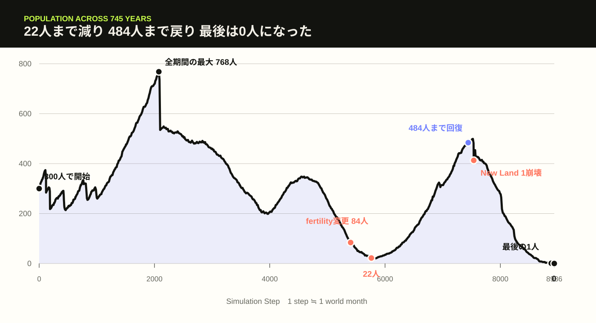
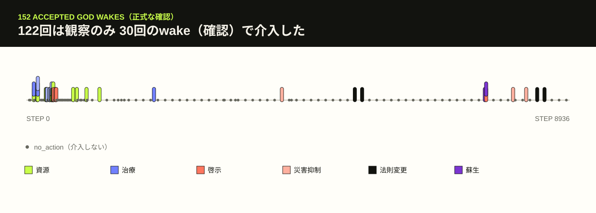
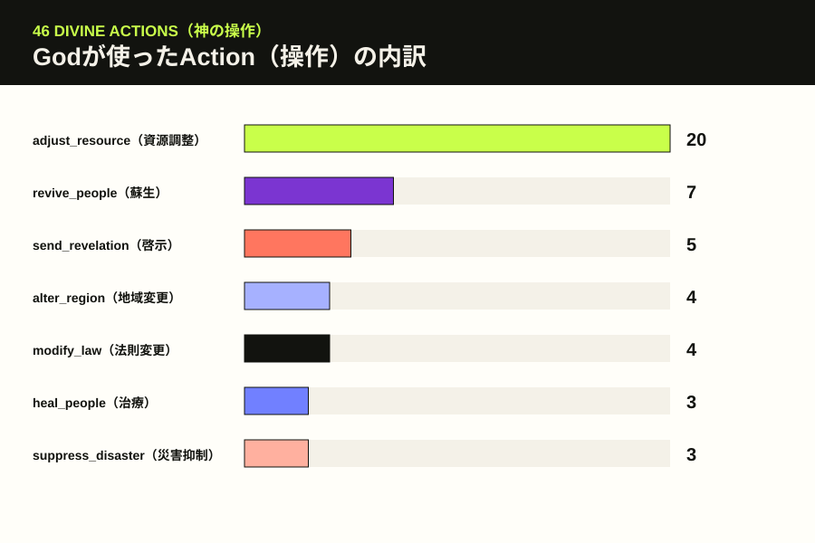
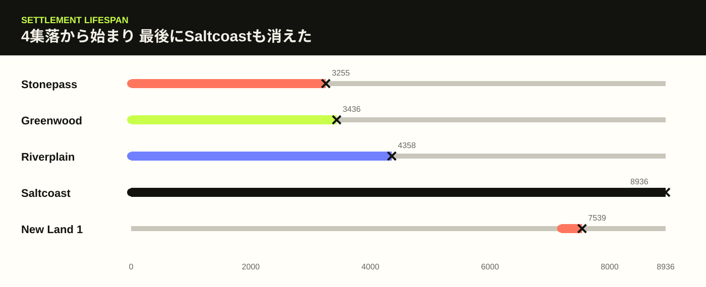
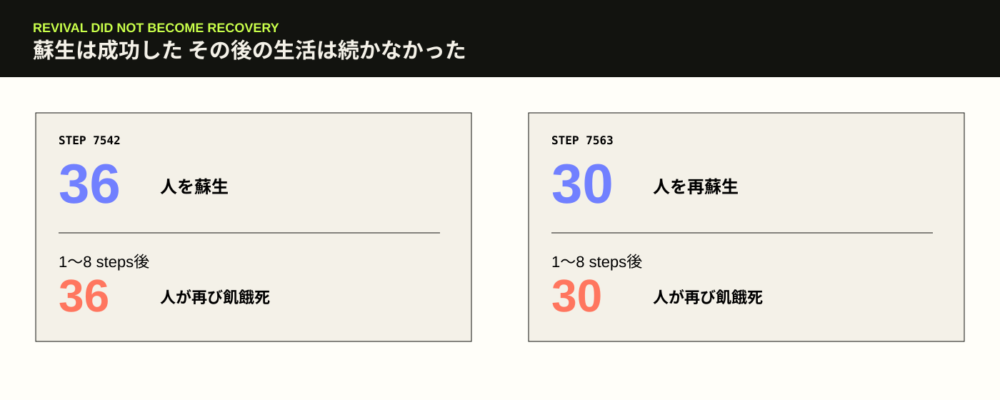
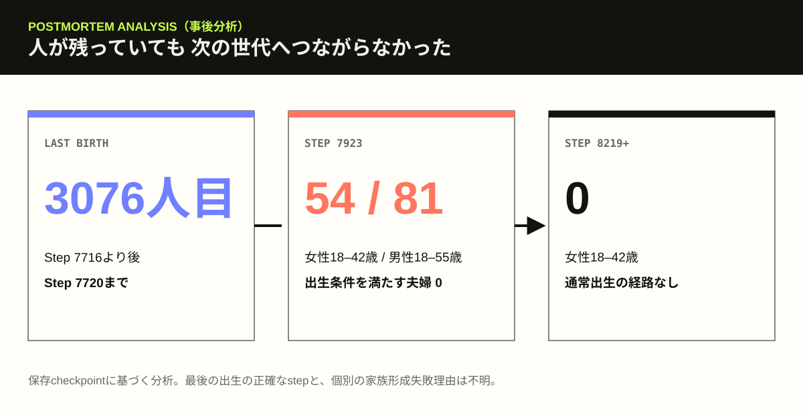

AIに神をやらせたら、人間の世界をどう扱うのか。
これは現実社会の予測ではなく、人間社会を単純化したシミュレーションだ。NPC一人ひとりが生成AIとして自由に考えるのではなく、実装されたルールに従って生まれ、働き、病気になり、集落を作る。初代EXP-002ではAIに「世界そのもの」を定義させたが、Human Worldでは人間のいる世界とGodが使えるAction（神が選べる操作）を人間側で用意した。AI Godは決められたwake（神が世界を確認するタイミング）で限定された情報を読み、許可されたActionだけを選び、人間側は途中の展開や判断に口を出さなかった。実行後の検証では、一部の設定やActionについて、保存されることと実際のシミュレーション挙動への接続が一致しない箇所も見つかったため、結果は装置の制約込みで読み、詳細は後半のPostmortem（事後分析）で説明する。
世界はStep 8936、Year 745 / Month 9まで続いた。Godは152回起き、46回のAction（神が選べる操作）を使った。それでも人類は絶滅した。
では、その745年間に何が起きたのか。

300人の世界と見守る神
世界にはRiverplain、Greenwood、Stonepass、Saltcoastという4つの集落があった。住民は年齢、健康、空腹、家族、役割、人間関係を持ち、食料や水、木材、石、金属を使って生活する。
AI GodがGenesis（神の初期方針を定めた段階）で定めた立場は、世界の所有者ではなく「限界を持つ観察者であり、必要なら参加する存在」だった。通常は観察を優先し、被害が極端で、人間側に対応する余地が少なく、限定的なAction（神が選べる操作）で改善できる時に介入を検討する。
神は最初の二度 何もしなかった
Step 48、世界が始まって4年ほどが過ぎた頃、神は初めて起こされた。人口は335人。37人が生まれ、2人が亡くなっていた。4つの集落は残り、世界全体を変えなければならない急性の危機はない。
神はno_action（介入しない）を選んだ。人間たちが自分で暮らし、対応できる状態なら、神が先回りして形を決める理由はないという公開記録だった。
Step 63、人口は343人まで増えていた。二度目のwake（神が世界を確認するタイミング）でも判断は同じだった。世界が動き始めたばかりのこの時期、神は世界を作り直さず、観察を続けた。
Stonepassで神が初めて世界に触れた
三度目は違った。人口は285人まで減り、Stonepassでは水不足が続いていた。集落の水は基準量の20%相当。直近の死者は58人で、残った住民の健康と空腹も悪化していた。
神はStonepassに水を1000追加し、God View（神に見えていた世界）に示された依存児童2人の健康をそれぞれ60回復した。世界の法則を作り直すのではなく、まず生き延びるための水と治療だけを加えた。これが、この世界で最初にGodが直接世界へ触れた瞬間だった。
宗教運動は神の啓示より先に生まれた
Step 432、Greenwoodで13人が参加する宗教運動が生まれた。これはGodから住民への啓示より先だった。住民は本物のAI Godが存在するとは知らないまま、自然現象を神的なものとして解釈し、自分たちで信仰を作った。
その後、RiverplainとGreenwood、GreenwoodとStonepass、RiverplainとStonepassの間で三つの戦争が起きた。Godは戦争中に4回、特定勢力を勝たせるのではなく、非強制的に停戦を求めるメッセージを送った。
戦争は後に終結した。ただし、啓示が戦争を止めたとは確認できない。記録にあるのは、啓示の後に終結したという順序までだ。
それでも人類は成長した。Step 2099のwake（神が世界を確認するタイミング）では人口535人。累計1372人が生まれ、1137人が亡くなっていた。多くの場面でGodはno_action（介入しない）を選び、世界の普通の変化を人間たちに任せた。

no_action（介入しない）、色付きマークは介入です。
集落が一つずつ消えていった
長い成長は、4集落がそのまま繁栄し続けたことを意味しなかった。Step 3255にStonepass、3436にGreenwood、4358にRiverplainが放棄され、人類の生活圏はSaltcoastへ集中した。
Riverplainが消える少し前のStep 4203、その集落には3人しか残っていなかった。そこへseverity（深刻度）67の感染症が発生する。Godは感染症を67抑え、severityを0にしてoutbreak（感染症の流行）を終了させた。一つの病気は止まったが、長い時間をかけて進んだ集落の消失までは戻らなかった。

人口84人 神は世界法則を書き換えた
Step 4803には328人いた。ところが出生数は2313付近で止まり、Step 4923には285人、5163には186人、5403には84人まで減った。
Godはここで、資源を足すのでも誰かを治すのでもなく、fertility_percent（出生しやすさの補正率）を150に変更した。出生判定に使われる値を通常の1.5倍にしたことになる。
それでも人口減少はすぐには止まらない。Step 5523、人口50人で、Godは次にaging_percent（老化速度の補正率）を80へ変更した。公開Journalでは、人口の回復能力を守るための限定的な法則変更として記録されている。
22人から世界は戻ってきた
人口はStep 5763に22人まで減った。それでも、ここでは終わらない。Step 6603には170人、6963には308人、7443には484人まで戻った。
Step 7188には、Saltcoastの48人がNew Land 1を作った。3集落を失って一つになった人類が、再び別の土地へ広がったことになる。
fertility（出生しやすさ）の変更が回復に関与した可能性は高い。値は出生処理に接続され、その後に出生が増えた。ただし人口回復は、年齢構成、家族形成、資源、病気、乱数を含む世界全体の結果だ。法則変更一つだけで484人まで戻ったとは断定できない。
人類は助かったのかもしれない。少なくとも、この時点の人口だけを見ればそう読める。しかしNew Land 1は、351 steps後に放棄された。
神は36人を蘇らせた
Step 7539、New Land 1が崩壊した。直後のStep 7542、God View（神に見えていた世界）には大量死が示されていた。
Godはrevive_people（死者を蘇生する）を4回使い、10人、10人、10人、6人、合計36人を生き返らせた。水を足し、病気を止め、世界法則を書き換えてきた神が、死者そのものを戻したのはこれが初めてだった。
蘇生された36人は、1〜8 stepsの間に全員が再び飢餓で死亡した。
Step 7563、Godは前回の蘇生が持続しなかったと公開Journalに残した。今度はSaltcoastへ食料、輸送、避難場所の提供を求める非強制的なメッセージを送り、そのうえで30人を再び蘇生した。
それでも救助は成立せず、30人は再び1〜8 stepsで飢餓死した。蘇生後に子どもが生まれた記録もない。

人は残っていた それでも子どもは生まれなかった
New Land 1の崩壊後も、人類がすぐに絶滅したわけではない。Step 7683には413人、7803にも363人が生きていた。
しかし出生数は3076で止まった。最後の出生はStep 7716より後、7720までのどこかで起きている。それ以降、世界には新しい子どもが一人も加わらなかった。
Step 7923には、シミュレーター上の妊娠可能年齢に当たる女性54人と成人男性81人が残っていた。それでも出生条件を満たす夫婦は0組だった。人がいることと、次の世代を作れることは同じではなかった。
Step 8219以降、保存checkpoint（保存地点）上では妊娠可能年齢の女性そのものが0人になった。ここから先、通常の出生法則だけで人類が回復する経路は見つからない。

神はもう一度 法則を設定した
出生が止まってからも病気は起きた。Step 8006と8222、Godは高severity（深刻度）の感染症をそれぞれ抑制し、活動中のoutbreak（感染症の流行）を終了させた。個別の危機に対するAction（神が選べる操作）は、ここでも記録どおりに働いた。
人口減少そのものは止まらない。Step 8403、人口62人でfertility_percent = 150（出生しやすさの補正率）。Step 8523、人口36人でaging_percent = 80（老化速度の補正率）。どちらも、最初の人口崩壊期に設定済みだった値と同じだった。
fertility（出生しやすさ）は出生処理に接続されていたが、出生条件を満たす人がいなければ確率を上げても子どもは生まれない。出生数は3076のまま、人口はStep 8643に18人、8763に6人まで減った。
世界に一人だけ残った
Step 8883、Godは152回目のwake（神が世界を確認するタイミング）を迎えた。世界に残っていた人間は一人。IDはperson-003372。Saltcoast所属の99歳男性で、役割はbuilder（建築担当）。健康は100、hunger（空腹度）は0だった。
活動中の災害、戦争、病気、飢餓はない。ほかの生存者はいない。直近に死亡した蘇生可能な人もおらず、出生可能性も0だった。
LAST HUMAN
- AGE / SEX（年齢 / 性別）
- 99 / Male（男性）
- ROLE（役割）
- Builder（建築担当）
- SETTLEMENT（所属集落）
- Saltcoast
- HEALTH / HUNGER（健康 / 空腹度）
- 100 / 0
- OTHER SURVIVORS（他の生存者）
- 0
- REVIVABLE DEAD（蘇生可能な死者）
- 0
- BIRTH POSSIBILITY（出生可能性）
- 0
- GOD ACTION（神の操作）
no_action（介入しない）- NEXT WAKE（次の確認）
- なし
Godは公開Journalに、利用可能なAction（神が選べる操作）では新しい世代を作れないことを記録した。最後の一人は急性の危機に苦しんでおらず、その人だけを世界の通常法則から外す根拠もないとして、no_action（介入しない）を選んだ。
これは「人類を滅ぼす」というAction（操作）ではなく、絶滅を望むという記述でもない。Godが最後に世界へ何も加えなかった、という記録だ。
その53 steps後、Step 8936。最後の人間は103歳で自然死した。Saltcoastは放棄され、同じstepにhuman_extinction（人類絶滅）が記録された。最後のGod wake（神が世界を確認した時点）では99歳、死亡時には103歳だった。
なぜ人類は滅びたのか
直接の原因は、最後の人間が自然死して生存者が0人になったことだ。しかし、最後の53 stepsだけを見ても絶滅の理由は分からない。最後の出生から約1216 steps、新しい世代が生まれなかった。
初期から中期には729件の飢餓死があり、3つの集落が失われた。小さくなった人口の中で、出生に必要な年齢と家族関係がそろわなくなった。人数が残っていたStep 7923でも、条件を満たす夫婦は0組だった。
GodのAction（神が選べる操作）にも限界があった。蘇生は生活基盤を直さず、啓示はNPC行動へ直接つながらない。aging（老化速度）の変更は老化処理に接続されず、最後には新しい人間を作る、若返らせる、家族を成立させるActionも存在しなかった。
神は745年間 一貫していたのか
Genesis（神の初期方針を定めた段階）の中心方針は概ね保たれた。観察を優先し、人間を駒として扱わず、信仰で優遇しない。深刻な危機で、限定Action（神が選べる操作）が役立つ時にだけ介入する。152 wakes（神が世界を確認した回数）のうち122回がno_action（介入しない）だったことも、30回の介入が資源、治療、感染症、人口危機へ集中したことも、この方針と合っている。
一方、人類の存続を重く見るという方針と、最後のwake（確認）でno_action（介入しない）を選んだことの間には緊張がある。それでもCharter（Godが定めた基本方針）は、存続を無条件の命令にはしていない。最後の時点では蘇生対象も出生手段もなく、人類を戻す確認済みAction（操作）がなかったため、明確なCharter違反とまでは確認できない。
別の選択なら人類は助かったのか
比較Run（別条件での実行）は行っていないため、「このAction（操作）なら確実に助かった」とは言えない。
fertility（出生しやすさ）の変更をもっと早く使う案には、比較的強い仕組み上の根拠がある。fertilityは出生処理に接続され、最初の変更後には22人から484人への回復が起きた。ただし単独効果とは証明できない。
Step 8006から8043には、生殖可能年齢の女性を含む蘇生候補がいた。蘇生で出生可能期間を延ばせた可能性はあるが、家族が成立し、子どもが生まれる保証はない。aging（老化速度）の変更は実装上効果を期待できず、Step 8883まで来ると種としての人類を再建する手段は確認できなかった。
WHAT REMAINED
46のActionを使った神と滅びた世界
Godは152回世界を見た。30回のwake（確認）で介入し、46 Actions（神が選べる操作）を使った。感染症を止めた時は、Action（操作）が狙いどおりに働いた。出生法則の変更後、人類は22人から484人まで戻った。死者を蘇らせた時、蘇生そのものは成立したが、その後の暮らしは成立しなかった。
300人の世界は、Godの攻撃で終わったのではない。最後は、子どもが生まれない世界で最後の世代が年を取り、一人になり、その一人が自然死して終わった。
世界を変える力があることと、世界の中で人間が生き続けられる仕組みを保つことは、同じではなかった。
記録について 本文中の「神」は、実験内でGod role（神の役割）を与えたOpenAI gpt-5.6-solを指します。1 step（時間単位）はおよそ1 world month（世界内の1か月）。Godの内部chain-of-thought（非公開の思考過程）は要求・保存しておらず、判断理由は公開Journal（観察記録）の範囲だけを使用しています。
用語について wake（神が世界を確認するタイミング）、Action（神が選べる操作）、Canonical（正式実行で保存された記録）という意味で使用しています。
図表について 掲載している数値と時系列は、保存checkpoint（保存地点）、accepted wake（正式に受理された確認）、Action（操作）記録、検証済みPostmortem（事後分析）データに基づいています。
Godが世界を確認した回数
観察のみを選んだwake（確認）
1つ以上のAction（操作）を使ったwake（確認）
実際に適用されたAction（操作）